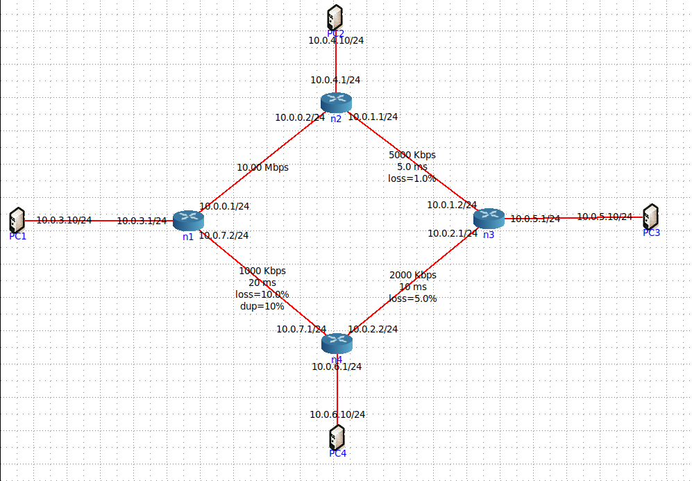

Welcome to CyberChase!
Este painel fornece métricas e alertas em tempo real do nosso projeto de monitoração. É possível acompanhar o desempenho dos seus sistemas, visualizar alertas e analisar estatísticas de agentes.
Navegue pelo menu lateral para explorar várias métricas, alertas e estatísticas de desempenho dos agentes.
